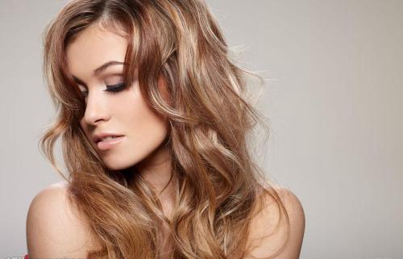

介绍
卷发是发型的一种造型。卷发的类型分为很多种，常见的就是自然卷和人工卷了。自然卷为天生的，人工卷是人们追求美的效果用卷发棒、卷发钳、卷发球等一系列卷发用具是头发卷曲的结果，有多种发型，一般卷发后可以使用一些让头发丰盈增加弹性、增加光泽度让头发更闪耀、动人。现在的卷发造型也是都市男女性风靡追求的一种时尚发型。

卷发发型有自然卷，打理成卷发发型，简单的说就是不是直发，而是一种有s形的头发叫卷发，卷发其实在国外很流行，比如：韩国.而且头发不能太短，一定要大于10厘米，可以做成卷发，而且相当有个性和魅力。打理短卷发的时候，应当根据自己的头形来打理，保持一种形状不变发型。

大波浪卷发和中度卷发都需要较强的定型力来保持它的造型弧度，如果你用错了产品，可能没有半天工夫，造型就扁塌了，所以推荐使用定型力最强的产品。

选择什么样的卷发首先要考虑你的脸型，扬长避短。方形、圆形、梨形（额头较窄）脸型的人都不适合大波浪的卷发，会显得拖沓、没有精神；瓜子脸（宽额头、尖下巴）适合“Ω型”发型；菱形脸（窄额、高颧骨）也适合“Ω型”发型，但还要注意将顶部的头发蓬松圆润起来；方形脸应该将顶部的头发削薄，卷发将脸两侧适当遮盖；椭圆形脸，也就是俗称的“鹅蛋脸”是中国人公认的最美的标准脸型，什么样的卷发都合适。
色彩也是美发的重要元素，若能技巧性的为卷发增添各种色彩，可以使发型更为突出。但选择染什么颜色要受个人肤色的限制，脸色红润的染红色系、黄色系都比较合适；脸色偏冷的则应选择染紫色系。一般来讲，中国人染紫色系的头发都不会是错误的选择。